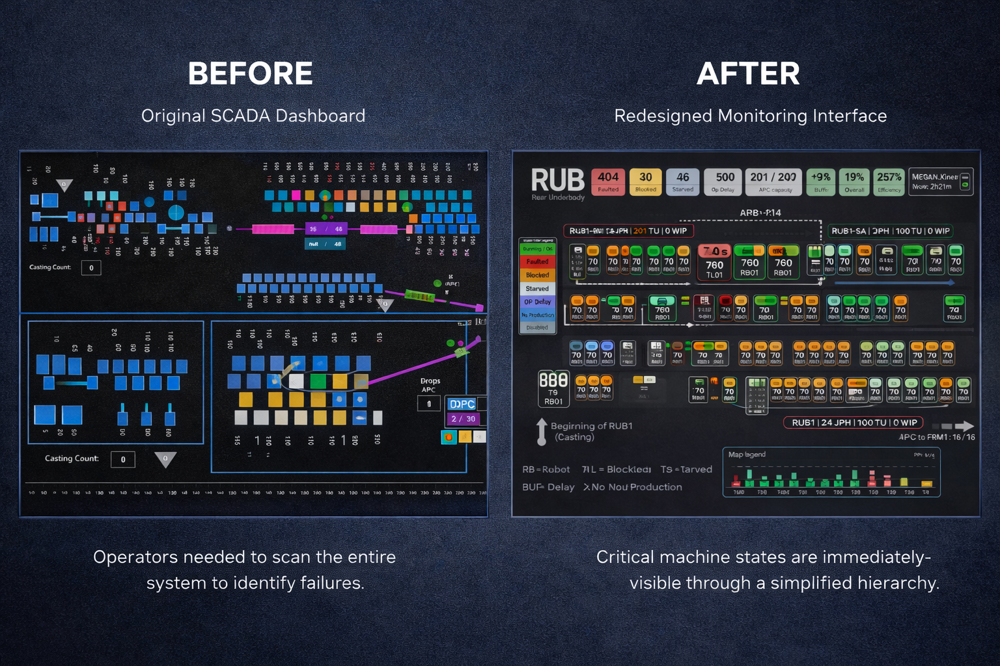

Complex systems are only useful when people can understand them fast enough to act. I redesign SCADA dashboards, production monitoring tools, and operational platforms so teams can detect problems faster and make better decisions.
I turn technically correct but hard-to-understand systems into interfaces people can use.
How I Work
Complexity → Clarity
I don't start by decorating screens. I start by understanding how people actually work.
01
Observe the real workflow
I watch how people use the system in real conditions — not how it was designed to be used. I look for hesitation, workarounds, and ignored information.
02
Find the hidden friction
I identify where people hesitate, repeat actions, make mistakes, or rely on workarounds. The friction is almost always invisible until you look for it.
03
Rebuild the information architecture
I reorganize the system around what users need to understand first, second, and third — not around technical structure or organizational hierarchy.
04
Design for fast decisions
I reduce visual noise, clarify hierarchy, and make system states readable at a glance. Less cognitive load = faster action.
05
Test with actual users
I validate with the people who use the system daily and keep improving based on their feedback. I conducted 15+ operator interviews at Tesla alone.
Capabilities
What I do.
01
UX & Product Design
UX Research
Usability Testing
Wireframing & Prototyping
Information Architecture
User Flows
Interaction Design
02
Industrial Systems
SCADA Interfaces
Production Monitoring
KPI Dashboards
HMI / Control Interfaces
Operational Decision Tools
Workflow Simplification
03
Technical Background
Electronics & Robotics Eng.
Ignition Perspective
Siemens TIA Portal
Python & MATLAB
Industrial Automation
Figma & Adobe Suite
04
Events & Operations
Media Platforms
Large-scale Event Ops
Internal Communication Tools
Festival App / Website UX
Stakeholder Collaboration
Tour Coordination
About
I come from engineering. I design for humans.
With a background in Electronics & Robotics Engineering and a Master's in User Experience Psychology, I specialize in transforming complex operational environments into intuitive systems.
My work focuses on identifying hidden friction in technical workflows — from industrial SCADA systems at Tesla to large-scale festival operations at Apodaca Group. Rather than simply redesigning interfaces, I restructure information, workflows, and decision-making systems so people can understand and act faster.
From ignored dashboard to real-time production tool. Making machine failures visible before they slowed the Cybertruck line.
Project Snapshot
Company
Tesla Inc.
Location
Austin, TX
Role
SCADA Interface Visualization Eng.
Timeline
Sep 2024 – Apr 2025
Users
Engineers, Technicians, Operators
Tools
Ignition Perspective · Figma
99%Learning time reduction
50%Faster error detection
15+Operator interviews
01 / Context
The system they ignored
Tesla's Cybertruck Body-in-White production floor relied on SCADA dashboards to monitor machine status and detect failures across multiple stations.
However, the existing interface was difficult for engineers and technicians to understand, which limited its effectiveness as a real-time decision-making tool.
02 / Problem
Cognitive overload
The SCADA interface suffered from severe cognitive overload. Although it contained large amounts of information, most operators struggled to interpret it quickly.
Interface suffered from severe cognitive overload
Large amounts of information, but hard to interpret quickly
Dashboards were often ignored entirely
Teams relied on manual troubleshooting and trial-and-error
Slowed down problem detection and reduced operational efficiency
Before — Original Problem
Equal visual weight
When everything looks equally important, nothing stands out. The most critical fault had the same visual weight as a normal running station. The operator had to search — every time.
03 / My Role & Approach
How I got involved
My Role
UX design and interface architecture for the production floor monitoring dashboards. My responsibilities included:
Identifying primary users
Understanding operational workflows
Redesigning the interface structure
Simplifying information hierarchy
Validating design changes through user feedback
Approach
Observing real-world usage of the dashboards
Conducting interviews with engineers and maintenance technicians
Identifying cognitive overload and information hierarchy issues
Mapping critical pain points
Redesigning the interface with a focus on clarity and usability
The goal was not to add more information, but to reduce visual noise and improve decision-making speed.
04 / Solution
The redesign
The redesigned dashboard prioritized information in a linear and cognitively intuitive layout, rather than following the exact physical plant structure.
Simplified visual hierarchy
Reduced visual noise and distracting color schemes
Dynamic elements showing machine status and failures
Clear station identification and machine priority indicators
Standardized color meanings and abbreviations
Instead of showing every machine simultaneously, the interface highlighted the highest priority machine failure within each station, allowing operators to immediately identify where attention was needed.
BeforeOriginal SCADA interface — equal visual weight, hard to scan
AfterRedesigned SCADA — failures prioritized, readable at a glance
DetailElement-level before / after comparison

OverviewFull dashboard comparison
05 / Impact
What changed
50% faster error detection on the production floor
Increased adoption of the SCADA dashboards by operators
Faster identification of complex machine failures
Design standardization across the Cybertruck Body-in-White floor
New operators were able to understand the system within minutes rather than months
Key Insight
Complex systems fail when users cannot interpret them quickly. Reducing cognitive overload and prioritizing clarity dramatically increases system adoption and operational efficiency.
Next Projects
KPI DashboardProduction MonitoringTesla
Tesla KPI Dashboard
Turning 25 production browser tabs into one operational view. Nobody asked for this — I noticed it while watching a supervisor work.
Project Snapshot
Company
Tesla Inc.
Location
Austin, TX
Role
UX Design Engineer
Timeline
Sep 2024 – Apr 2025
Users
Production Supervisors
Impact
80% report time reduction
80%Report time reduction
25→1Tabs consolidated
10minFrom 80 minutes
01 / Context
25 tabs, 1 supervisor
Supervisors responsible for Cybertruck Body-in-White production relied on dashboards to track hourly production output and determine whether lines were meeting their production targets.
However, the system displayed each production line in separate browser tabs — one per line.
02 / Problem
Fragmented visibility
Supervisors had to constantly switch between multiple tabs to monitor production across 25 different lines. This caused several issues:
Loss of visibility across the entire production system
Excessive clicking and navigation
Delayed identification of underperforming lines
Difficulty maintaining focus on the main objective
A supervisor's screen — 25 tabs, one per production line
Report time — before
80min
Report time — after
10min
03 / My Role & Approach
How I got involved
My Role
UX design and concept development for a production monitoring dashboard. The problem was initially identified through observation while watching supervisors interact with the existing system.
After identifying the issue, I collaborated with a software developer to design and implement a new dashboard.
Approach
Observing how supervisors navigated the existing dashboards
Identifying inefficiencies caused by tab-based monitoring
Interviewing supervisors to understand critical KPIs
Defining the most relevant metrics for operational decision-making
Designing a centralized dashboard that displayed all production lines simultaneously
04 / Solution
One view. All 25 lines.
The redesigned interface allowed supervisors to monitor all production lines in a single view. The dashboard included two main views: hourly production output per line, and total daily production.
Hourly production output per line
Total daily production
Weekly totals
Production targets
Visual indicators showing progress toward goals
By consolidating all production data into a single interface, supervisors could instantly identify which lines required attention.
Before25 separate browser tabs, one per line
AfterAll 25 lines consolidated into one view
05 / Impact
What changed
80% reduction in time required to generate production reports
Significantly improved visibility of production KPIs
Faster identification of production delays
Reduced navigation complexity for supervisors
Key Insight
Many operational inefficiencies come from interface fragmentation. Consolidating information into a single, well-structured view can dramatically improve situational awareness.
Next Projects
Media PlatformInformation ArchitectureEvent Operations
Tecate Pa'l Norte Media Platform
Helping journalists find event information without asking the same questions again. A self-service hub that replaced repetitive email communication.
Project Snapshot
Company
Apodaca Group
Event
Tecate Pa'l Norte
Role
UX Designer / Info Architecture
Timeline
Sep 2022 – Present
Festival App
15,000 users · +40% engagement
Impact
90% reduction in inquiries
90%Media inquiry reduction
15KFestival app users
+40%User engagement
01 / Context
Same email, 320 times
Apodaca Group organizes large-scale music events such as Tecate Pa'l Norte. The media relations team was responsible for communicating event information to journalists across Mexico.
However, communication relied primarily on email campaigns and social media announcements.
The EventTecate Pa'l Norte — one of Mexico's largest music festivals
The ScaleThousands of attendees, hundreds of journalists to serve
02 / Problem
No central source
Journalists often lacked a centralized place to access event information, press materials, artist details, and media assets. This created several challenges:
Constant repeated questions from journalists
Excessive email communication
Outdated information reaching media outlets
Inefficiencies within the media relations team
Communication Flow — Before
📧 Journalist emails team → "What artists are confirmed?"
UX design and information architecture for a media information platform. I worked closely with the front-end developer and the media relations team to design the structure and user experience of the platform.
Approach
Identifying frequently asked questions from journalists
Analyzing the type of information journalists needed most
Mapping the information hierarchy for events and artists
Designing wireframes for the platform structure
Iterating on the design through continuous feedback from the team
04 / Solution
Self-service media hub
The resulting platform provided a centralized hub where journalists could quickly find what they needed:
View upcoming events
Access basic event information
Download press materials and assets
Explore artists represented by the company
Easily navigate event information by location
The system focused on simplicity and intuitive navigation, ensuring journalists could quickly find the information needed to produce articles and coverage.
salaprensa.apodaca.com / home
The HubHome — everything a journalist needs in one place
↕ Scroll within each window to explore the full page
05 / Impact
What changed
Significant reduction in repetitive media inquiries
Improved efficiency for the media relations department
Better communication with journalists across the country
Increased media coverage due to easier access to information
Key Insight
Working directly with the people who face operational problems daily leads to more effective system design. Understanding repetitive workflows is key to building simple and efficient platforms.


.png)